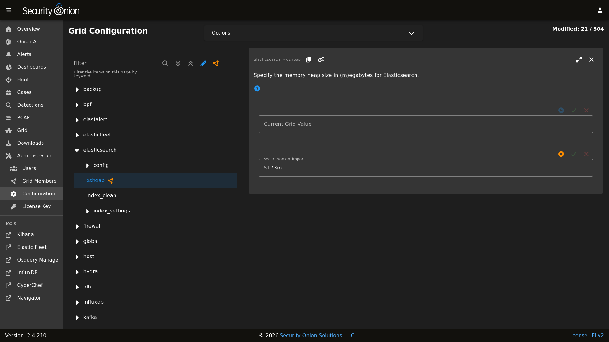

Elasticsearch
From https://www.elastic.co/products/elasticsearch:
Elasticsearch is a distributed, RESTful search and analytics engine capable of addressing a growing number of use cases. As the heart of the Elastic Stack, it centrally stores your data for lightning fast search, fine‑tuned relevancy, and powerful analytics that scale with ease.
Storage
All of the data Elasticsearch collects is stored under /nsm/elasticsearch/.
Warning
Do not manually delete any files in /nsm/elasticsearch! If you need to delete Elasticsearch indices, this should be done through Elasticsearch itself rather than deleting files from the filesystem.
Schema
Security Onion tries to adhere to Elastic Common Schema (ECS) wherever possible. In some cases, additional fields or slight modifications to native Elastic field mappings may be found within the data. You can learn more about ECS at https://www.elastic.co/elasticsearch/common-schema.
Querying
You can query Elasticsearch using web interfaces like Alerts, Dashboards, Hunt, and Kibana. You can also query Elasticsearch from the command line using so-elasticsearch-query.
Authentication
You can authenticate to Elasticsearch using the same username and password that you use for Security Onion Console (SOC).
You can add new user accounts to both Elasticsearch and Security Onion Console (SOC) at the same time as shown in the Adding Accounts section. Please note that if you instead create accounts directly in Elastic, then those accounts will only have access to Elastic and not Security Onion Console (SOC).
Indexing
Most data is associated with a data stream, which is an abstraction from traditional indices that leverages one or more backing indices to manage and represent the data within the data stream. The usage of data streams allows for greater flexibility in data management.
Data streams can be targeting during search or other operations directly, similar to how indices are targeted.
For example, a CLI-based query against Zeek connection records would look like the following:
so-elasticsearch-query logs-zeek-so/_search?q=event.dataset:conn
When this query is run against the backend data, it is actually targeting one or more backing indices, such as:
.ds-logs-zeek-so-2022-03-07.0001
.ds-logs-zeek-so-2022-03-08.0001
.ds-logs-zeek-so-2022-03-08.0002
Similarly, you can target a single backing index with the following query:
so-elasticsearch-query .ds-logs-zeek-so-2022-03-08.001/_search?q=event.dataset:conn
You can learn more about data streams at https://www.elastic.co/guide/en/elasticsearch/reference/current/data-streams.html.
Configuration
You can configure Elasticsearch by going to Administration –> Configuration –> elasticsearch.
{kind=link}

Parsing
Elasticsearch receives unparsed logs from Logstash or Elastic Agent. Elasticsearch then parses and stores those logs. Parsers are stored in /opt/so/conf/elasticsearch/ingest/. Custom ingest parsers can be placed in /opt/so/saltstack/local/salt/elasticsearch/files/ingest/. To make these changes take effect, restart Elasticsearch using so-elasticsearch-restart.
Elastic Agent may pre-parse or act on data before the data reaches Elasticsearch, altering the data stream or index to which it is written, or other characteristics such as the event dataset or other pertinent information. This configuration is maintained in the agent policy or integration configuration in Elastic Fleet.
Note
Cluster
In a distributed deployment with a manager and one or more search nodes, the manager and search nodes are joined together as a multi-node Elastic cluster.
For more information, please see the cluster information at https://www.elastic.co/guide/en/elasticsearch/reference/current/modules-node.html#modules-node.
Elasticsearch Node Roles
Please see the Elasticsearch node roles documentation at https://www.elastic.co/guide/en/elasticsearch/reference/current/modules-node.html.
When building a distributed deployment, the Security Onion manager has to start off with the data node role. If you later join a separate search node, then you may want to migrate the data from the manager to the search node and then remove the data node role from the manager. For more information, please see:
If you want to set certain search nodes to the data_hot, data_warm, or data_cold roles, make sure you remove the data role from them. You will also want to ensure that data_content is assigned to your hot nodes.
Warning
Elasticsearch node roles is an advanced setting and you should be careful to avoid disruption to your cluster!
To see and modify Elasticsearch node roles, first navigate to Administration –> Configuration, click the Options menu at the top of the page, and enable the Show advanced settings option. Then navigate to elasticsearch –> so_roles and select the desired role. Finally, navigate to config –> node –> roles and the list of roles should appear on the right side of the page.
Templates
Fields are mapped to their appropriate data type using templates. When making changes for parsing, it is necessary to ensure fields are mapped to a data type to allow for indexing, which in turn allows for effective aggregation and searching in Dashboards, Hunt, and Kibana. Elasticsearch leverages both component and index templates.
Note
For managing templates for third party integrations, please see the Third Party Integrations section.
Component Templates
From https://www.elastic.co/guide/en/elasticsearch/reference/current/index-templates.html:
Component templates are reusable building blocks that configure mappings, settings, and aliases. While you can use component templates to construct index templates, they aren’t directly applied to a set of indices.
Also see https://www.elastic.co/guide/en/elasticsearch/reference/current/indices-component-template.html.
Index Templates
From https://www.elastic.co/guide/en/elasticsearch/reference/current/index-templates.html:
An index template is a way to tell Elasticsearch how to configure an index when it is created. Templates are configured prior to index creation. When an index is created - either manually or through indexing a document - the template settings are used as a basis for creating the index. Index templates can contain a collection of component templates, as well as directly specify settings, mappings, and aliases.
In Security Onion, component templates are stored in /opt/so/saltstack/default/salt/elasticsearch/templates/component/.
These templates are specified to be used in the index template definitions in /opt/so/saltstack/default/salt/elasticsearch/defaults.yml.
Community ID
field expansion matches too many fields
If you get errors like failed to create query: field expansion for [*] matches too many fields, limit: 3500, got: XXXX, then this usually means that you’re sending in additional logs and so you have more fields than our default max_clause_count value. To resolve this, you can go to Administration –> Configuration –> elasticsearch –> config –> indices –> query –> bool –> max_clause_count and adjust the value for any boxes running Elasticsearch in your deployment.
Heap Size
If total available memory is 8GB or greater, Setup configures the heap size to be 33% of available memory, but no greater than 25GB. You may need to adjust the value for heap size depending on your system’s performance. You can modify this by going to Administration –> Configuration –> elasticsearch –> esheap.
Field limit
Security Onion currently defaults to a field limit of 5000. If you receive error messages from Logstash, or you would simply like to increase this, you can do so by going to Administration –> Configuration –> elasticsearch –> index_settings –> so-INDEX-NAME –> index_template –> template –> settings –> index –> mapping –> total_fields –> limit.
Please note that the change to the field limit will not occur immediately, only on index creation.
Re-indexing
Re-indexing may need to occur if field data types have changed and conflicts arise. This process can be VERY time-consuming, and we only recommend this if keeping data is absolutely critical.
Clearing
If you want to clear all Elasticsearch data including documents and indices, you can run the so-elastic-clear command.
GeoIP
Elasticsearch 8 no longer includes GeoIP databases by default. We include GeoIP databases for Elasticsearch so that all users will have GeoIP functionality. If your search nodes have Internet access and can reach geoip.elastic.co and storage.googleapis.com, then you can opt-in to database updates if you want more recent information. To do so, run the following command on your manager:
sudo so-elasticsearch-query _cluster/settings -d '{"persistent":{"ingest.geoip.downloader.enabled":true}}' -XPUT
Health
To check Elasticsearch health, go to the Grid interface and check the Elasticsearch Status field. If it shows anything other than OK, then run the following command from the CLI on the manager node to check for additional clues:
sudo so-elasticsearch-query _cluster/health?pretty
Status Pending
If the Grid interface shows Elasticsearch Status as Pending, check for unassigned shards by running the following command from the CLI on the manager node:
sudo so-elasticsearch-query _cat/shards | grep UN
The result of the query should display affected indices. Older metrics indices for Elastic Endpoint logs may have been assigned a replica, so if you are running a single-node Elastic cluster there will be nowhere for the replica to exist.
To resolve the issue, run the following command for each affected index (replacing $index with the actual index name):
sudo so-elasticsearch-query $index/_settings -d '{"number_of_replicas":0}' -XPUT
After running the command, the index should no longer use replicas and the status should change from “Pending” to “OK” once all indices have been successfully modified.
Index Management
Elasticsearch indices are managed by both the so-elasticsearch-indices-delete utility and Index Lifecycle Management (ILM).
Note
Check out our Index Lifecycle Management video at https://youtu.be/Y6HVein7nP8!
Warning
so-elasticsearch-indices-delete is primarily designed for single-node deployments (IMPORT, EVAL, and STANDALONE). Running it on a multi-node deployment with one or more search nodes has the possibility of getting into a corner case state where more data is deleted than intended. Because of this, we are disabling this script on multi-node deployments starting in version 2.4.150. If you have a multi-node deployment and haven’t yet updated to 2.4.150, then we HIGHLY recommend that you go ahead and manually disable this script. You can find this setting at Administration –> Configuration –> elasticsearch –> index_clean. You will also need to ensure that ILM is configured properly to delete indices before disk usage reaches the Elasticsearch watermark setting. Otherwise, Elasticsearch may stop ingesting new data.
so-elasticsearch-indices-delete
so-elasticsearch-indices-delete manages size-based deletion of Elasticsearch indices based on the value of the elasticsearch.retention.retention_pct setting. This setting is checked against the total disk space available for /nsm/elasticsearch across all nodes in the Elasticsearch cluster. If your indices are using more than retention_pct, then so-elasticsearch-indices-delete will delete old indices until disk space consumed by indices is back under retention_pct. The default value for this setting is 50 percent so that standalone deployments have sufficient space for not only Elasticsearch but also full packet capture and other logs. For distributed deployments with dedicated search nodes where Elasticsearch is main consumer of disk space, you may want to increase this default value.
To modify the retention_pct value, first navigate to Administration –> Configuration. At the top of the page, click the Options menu and then enable the Show advanced settings option. Then navigate to elasticsearch –> retention –> retention_pct. Once you make the change and save it, the new setting will take effect at the next 15 minute interval. If you would like to make the change immediately, you can click the SYNCHRONIZE GRID button under the Options menu at the top of the page.
ILM
Index Lifecycle Management (ILM) manages the following:
size-based index rollover
time-based index rollover
time-based content tiers
time-based index deletion
Time-based index deletion is based on the min_age setting within the global policy or the individual policy for the index itself. Please note that size-based deletion via so-elasticsearch-indices-delete takes priority over time-based deletion, as disk usage may reach retention_pct and indices will be deleted before the min_age value is reached.
ILM settings can be found by navigating to Administration –> Configuration –> elasticsearch –> index_settings:
To edit the global policy that applies to ALL indices, navigate to global_overrides –> policy –> phases and there you will see the cold, delete, hot, and warm ILM phases.
To edit the policy for an individual index, first click the
Optionsmenu at the top of the page and then enable theShow advanced settingsoption. Then navigate to $index –> policy –> phases. There you will see the cold, delete, hot, and warm ILM phases for that particular index.It’s important to note that settings like
min_ageare calculated relative to the rollover date (NOT the original creation date of the index). For example, if you have an index that is set to rollover after 30 days and deletemin_ageis set to 30 then there will be 30 days from index creation to rollover and then an additional 30 days before deletion.When modifying ILM settings, note that some settings will only take effect after a new index is created.
Now that you have an overview of all that ILM can do, here’s a very high level overview of how you would configure ILM deletion for your deployment:
Determine your data retention requirements. This might be 1 week, 1 month, or more. It may also be different for different kinds of data.
Determine your current daily ingestion. One way to do this is to go to Kibana, select the menu on the left, select Stack Management, and then go to Index Management to see what your current indices look like. Another option is to run
sudo so-elasticsearch-indices-growthfrom the command line.Now that you have your data retention requirements and current daily ingestion, use those values to determine your storage requirements. Keep in mind that Elasticsearch’s default watermark setting of 80% means that you will want to keep 20% of your disk free and this will need to be accounted for in your storage requirements. If your storage requirements are greater than the amount of storage that you have available, then you may need to add additional search nodes.
Configure ILM Deletion to delete logs before hitting the Elasticsearch 80% watermark. This can be done globally for all indices by going to Administration -> Configuration -> elasticsearch > index_settings > global_overrides > policy > phases > delete > min_age. Again, keep in mind that the
min_agesetting is calculated relative to the index rollover date and NOT the original creation date of the index. If you want to specify different deletion values for different kinds of data, then you can enable advanced settings and then drill into specific policies to do so.
Tip
You might want to run sudo so-elasticsearch-indices-growth on a regular basis to keep an eye on the size of your indices.
In addition to sudo so-elasticsearch-indices-growth, you can also run sudo so-elasticsearch-retention-estimate which will give you an approximation of how many days’ worth of logs you can store. For example:
DISCLAIMER: Script output is based on current data patterns, but are approximations solely
intended to assist with getting a general ILM policy configured.
================ Storage Overview ================
Indexed data size: 141.12 GB (Elasticsearch)
Cluster capacity: 498.69 GB total
Cluster used: 245.32 GB
Low watermark: 80% (398.96 GB threshold)
Remaining space: 153.63 GB before low watermark
Cluster shards: 498 / 4000 (12.4%)
Cluster data nodes: 4
example-search1: data_hot,data_warm,data_content
example-search2: data_hot,data_warm,data_content
example-search3: data_cold
example-man: data_content
================ ES Growth ================
Daily growth rate: 4.08 GB/day
ILM deletion rate: 0.47 GB/day (scheduled)
Net growth rate: 3.62 GB/day
Daily shard creation: ~3 shards/day
Storage to be freed (30d): 2 indices (~13.97 GB, 4 shards)
================ Retention Projection ================
Oldest index: ~55 days (.ds-logs-auditd_manager.auditd-default-2025.09.30-000001)
Estimated retention: ~98 days (until configured low watermark setting)
Low watermark breach estimated in ~42.47 days (2026-01-06)
For maximum retention, our goal is to get the cluster balanced as close to the low watermark setting as possible. In this example, it appears the cluster is gaining about 4GB worth of logs per day. However, ILM is currently deleting roughly 0.5GB per day, so overall storage usage is increasing. Without tweaking ILM configuration, this cluster will hit the watermark in roughly 42 days (total retention being roughly 98 days). To combat this, one option is to set a global_overrides for the delete phase as described above setting the delete phase to something like 90 days. This gives us a bit of space between the estimated retention and our actual delete phase.
In addition to global overrides, which apply to all indices, it is possible to tweak per index ILM policies. For example, perhaps Suricata alert data is something you need to keep in storage for 120 days. You can configure the so-suricata.alerts policy to have a delete phase of 120d. This comes at the cost of needing to reduce retention on other indices in order to free up the needed storage for Suricata alerts.
Tip
Once you have ILM configured, you can consider increasing the cluster low / high watermark settings to allow Elasticsearch to use more of the available disk space. This can be done by going to Administration –> Configuration –> elasticsearch –> config –> cluster –> routing –> allocation –> disk –> watermark.
Note
Diagnostic Logging
Elasticsearch logs can be found in
/opt/so/log/elasticsearch/.Logging configuration can be found in
/opt/so/conf/elasticsearch/log4j2.properties.
Depending on what you’re looking for, you may also need to look at the Docker logs for the container:
sudo docker logs so-elasticsearch
More Information
Note